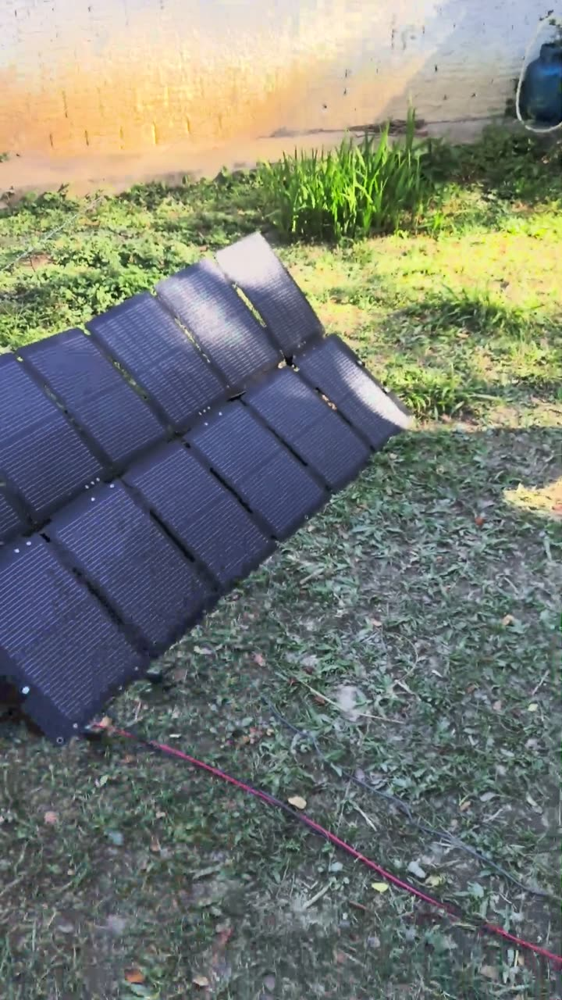
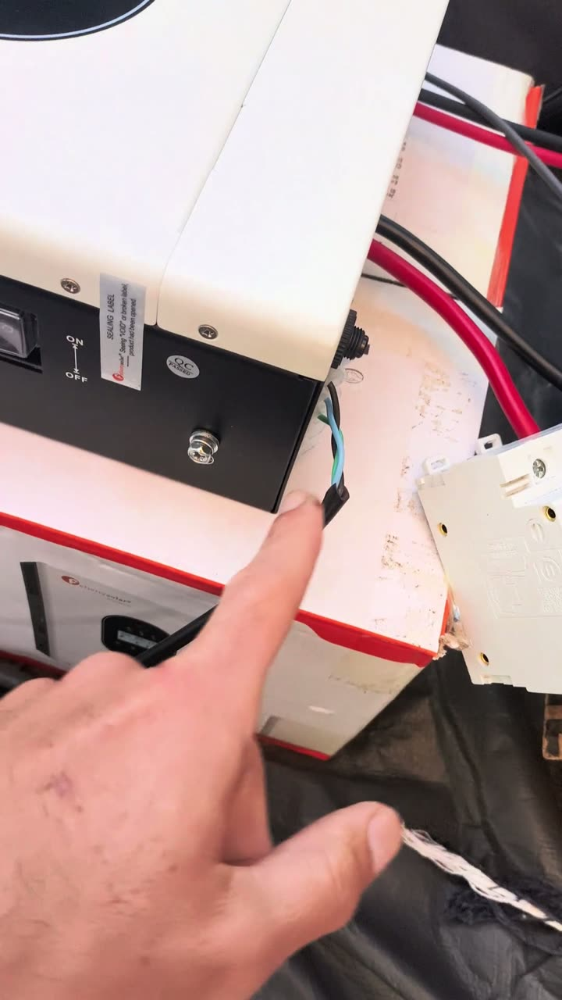
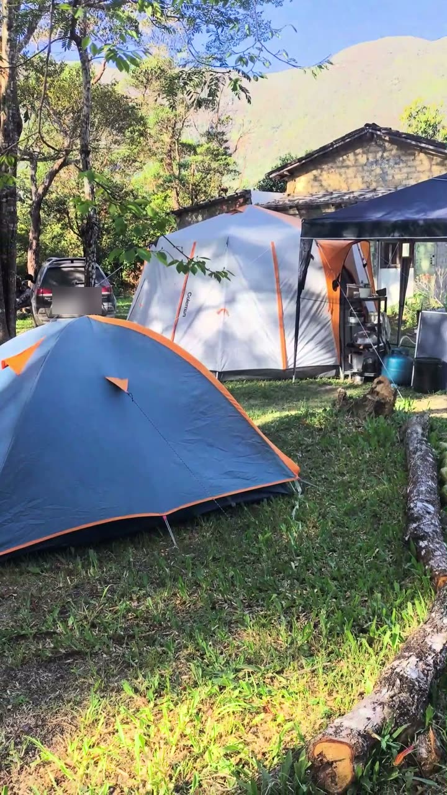
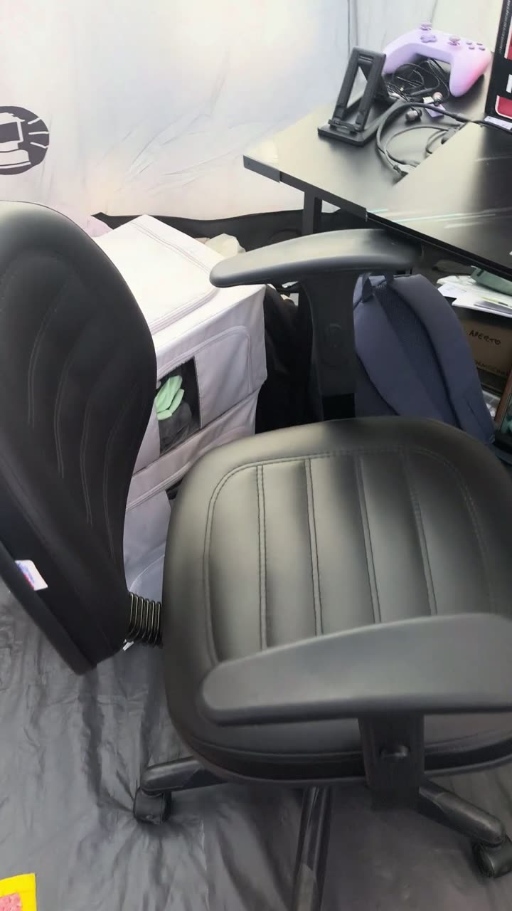
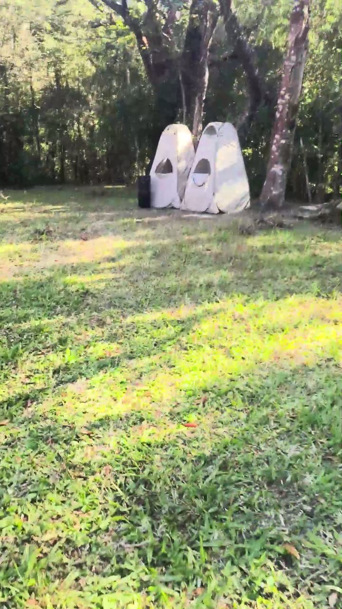
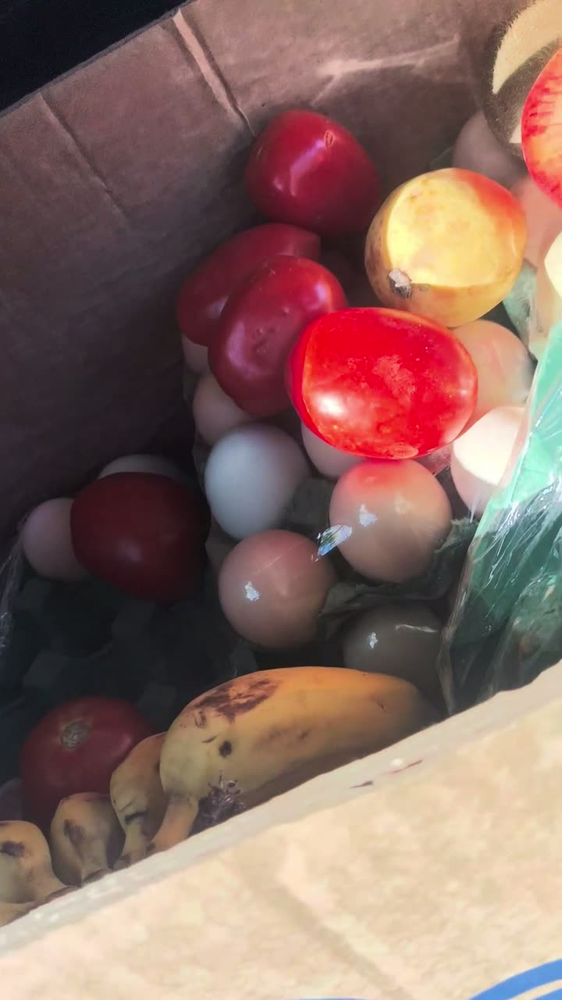

SOLAR OFFGRID
Uma casa de barraca na Chapada Diamantina que gera a própria energia e recebe internet por satélite. As compras foram de 13 de julho a 25 de agosto de 2026, e os trabalhos deste portfólio saem daqui.
A montagem foi feita por quem não sabia eletricidade, com uma IA explicando o dimensionamento, a escolha das peças e cada ligação.
A volta pela estrutura · 2 min 41 s · com som
Do sol à tomada
2 painéis Bluetti de 220 W
Ligados em série (53,8 V). Dobrados, cada um vira uma maleta.
Inversor híbrido Felicity
Carrega a bateria e entrega 220 V. Disjuntor de 100 A no meio do caminho.
Bateria JFA de 100 Ah
Lítio ferro-fosfato, 6.000 ciclos. Fica dentro da barraca.
Tomadas e antena
Notebook, celular, caixa de som, liquidificador, projetor. A Starlink Mini puxa 30 V por um conversor ligado na bateria.


Num dia de sol, os painéis geram perto de 1.500 Wh. Seis horas de trabalho consomem uns 950 Wh. A bateria guarda 1.024 Wh úteis, o que cobre quase um dia inteiro de consumo.
Os cômodos

Varanda
Gazebo de 3 x 3 m com fogareiro, mesa dobrável e a água: uma bombona de 50 L enchida todo dia e um filtro para beber. Sem geladeira, a couve fica numa panela com água.

Barraca de oito lados
Uma Coleman Octagon, feita para vento e chuva. Dentro, uma sala com sofá-cama de três isolantes, a área de trabalho e o canto do sistema elétrico.

Banheiros
Um para o banho, com chuveiro recarregável por USB e uma bomba no balde. O outro é seco: cobre-se com material seco a cada uso, não dá cheiro, e o conteúdo vira adubo depois de meses.

O carro
Faz de despensa. Na serra o tempo é frio, e a compra da semana dura a semana inteira fora da geladeira.
O que deu errado
- 17/07 a 03/08A primeira compra de painel não chegou. Veio o reembolso e, no mesmo dia, a compra dos dois painéis que estão lá.
- na montagemO borne de bateria do inversor só aceita cabo descascado, encaixado plano. O terminal de olhal que veio no cabo teve de ser cortado.
- numa madrugadaA ventania derrubou os banheiros fechados. Desde então eles ficam abertos, para o vento passar.
- no fim da tardeAs árvores fazem sombra cedo e os painéis param de gerar antes do pôr do sol.
Quanto custou
O plano de maio, com casa de madeira e telhado, estava orçado em R$ 25.000. Por mês ficam R$ 189 de internet e uns R$ 45 de gás.